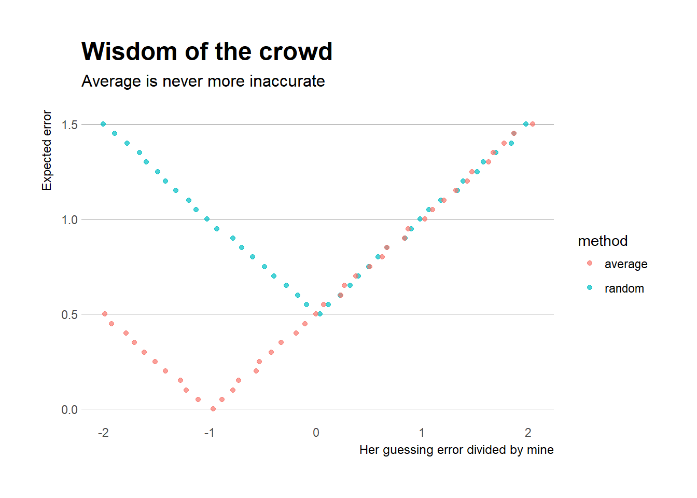
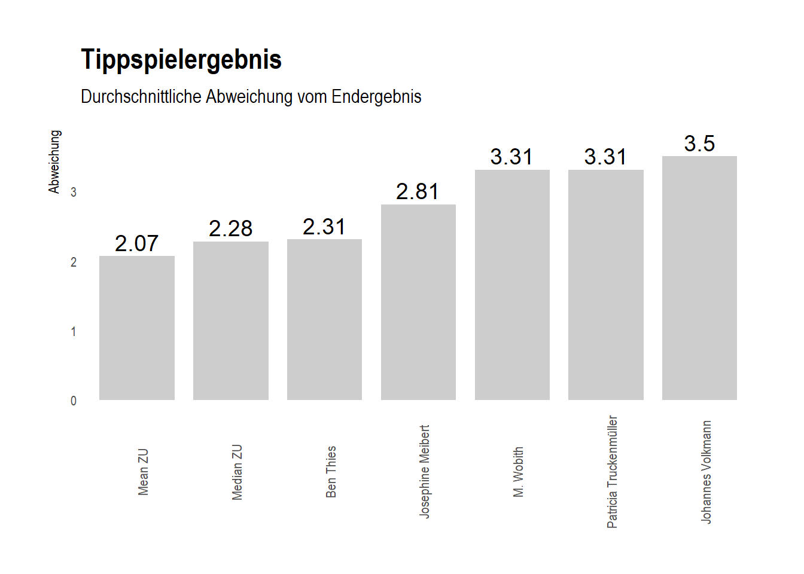

On the morning of the final day of the 2018 senate election [student represenatives elected into the most influential university board], Matej and I were sitting at the FAB Mensa, getting ready for a regular ZU-day (thus hanging around campus, a lot of coffee and long discussions voluntarily preventing you from work). Everything turned out quite different. Both passionate about elections, we started to send around fake polls for the election in some WhatsApp-Groups like it usually is the case during real elections when our party friends get the first exit polls a few hours early. But at some point, we thought? Why fake them as a joke if you can do real ones yourself? So thats what we did, using two different approaches that wil be described in detail in the following paragraphs. If you have any questions, feel free to shoot us a message or tweet.
When we decided we wanted to give it a shot at forecasting, we intuitively started walking around in the FAB Mensa and asking people who they had casted their two votes for. After a few minutes however, we started to wonder: Are people walking around Uni at a carneval Friday (thus a rather empty FAB) really representative of the average ZU-ler? This is important since polling or sampling in general is based on the (often brave) assumption that every individual in the target population has an equal chance of being selected for the sample. In our case, there were several indicators that spoke against this. To give you one example, 7th and 5th semester candidates Moritz and Clemens probably have many friends who are abroad right now (and thus allowed to vote electronically but of course not walking through FAB).
This when we had the idea to try out to give wisdom of the crowd a chance. The wisdom of the crowd is a phenomenon that recently has attracted some attention in forecasting and is based on the principle that collective judgements perform very well because they contain many individual judgements that cancel each other out. I actually discovered this phenomenon myself when I got lost on Lake Constance together with a friend a few years ago. “Lost” in that context actually meant that my sail boat’s engine broke with almost now wind in front of the harbour entrance of Romanshorn which is about 11-12 kilometers away from the SMH. Because it was already late(like 4 or 5), we started to wonder what time it was (smartly, we didn’t bring no watch or phone) and consequently if we would make it back home before darkness. Long story short, we didn’t. But what didn’t let me rest was the thought whether it would increase the accuracy of our time estimate if we averaged my friend’s and my individual time guesses instead of just taking one random judgement [not knowing who of us was the better guesser]. Say, for example, it really was 17.00 and her guess was 16.30. There are now two options:
A) My estimate is 17.00 or earlier.
B) My estimate is 17.00 or later.
The expected guessing error \(g_{guess}\) for asking a random person of us thus is:
\[\begin{equation} e_{random guess} = abs(\frac{1}{2} * (17.00-guess_1) + \frac{1}{2}*(17.00-guess_2)) (\#equation:1.1) \end{equation}\]At the same time, averaging our guesses leads to:
\[\begin{equation} e_{averaged guess} = abs( 17.00 - (\frac{guess_1 + guess_2}{2})) (\#equation:1.2) \end{equation}\]equation 1.1 as follows:
\[\begin{equation}
e_{random guess} = abs(\frac{17.00-guess_1 + 17.00 - guess_2}{2})
(\#equation:1.3)
\end{equation}\]
If we look at equations 1.2.(averaged guess) and 1.3(rewritten random guess), we can see that the two estimators are identical if and only if both guesses are off in the same direction (thus \(17.00-guess_1\) and \(17.00-guess_2\) have the same sign). If not equation 1.2 yields a lower guess error than 1.1/1.3.
To illustrate this with our lake-lost-example, say my friend’s guess was 16.30 while it really is 17.00. If now I am off in the same direction and guess 16.50, both averaging and randomly selecting produce an (average) estimate of 16.40 and thus the average accuracy does not change at all.
If however, I was of in another direction and guessed 17.20, for example, a random guess of one of us would produce an average accuracy of \(0.5*30 min + 0.5 * 20 min = 25 min\), while averaging the guesses leads to an accuracy of 17.00 - (16.30 + 17.20)/2 and thus 17.00 - 16.55 = 5 min.
We thus see that nothing changes if we are both off in the same direction but we gain a lot if we are off in opposite directions. So we can sometimes win but never lose, which definitely makes it a good bet. Last but not least, let’s look at this graphically:

We clearly see that whenever our guesses are off in the same direction, there is no difference between the methods. Whenever our guesses are off in the opposite direction however, the averaging (red) estimator clearly performs much better, with the best performance being located at wherever her forecast error is exactly -1* mine, which cancels out all error.
As I later found out, this is of course no new thing that I discovered but had already been applied by Sir Francis Galton more than 100 years ago, when he accidently found out that while individual guesses in a competition in ox-weight-guessing were all widely off, the average of 800 guesses (1.207 pounds)missed the actual weight (1.198 pounds) by less than 1%!
We created our forecast by averaging about 50 individual forecasts and calculating the mean and median forecast. Those result in the following estimates:
## [1] "Mean forecast"## cannata horn troendle enthaltung
## 1 30.08333 25.9375 34.54167 9.4375## [1] "Median forecast"## cannata horn troendle enthaltung
## 1 30.5 25 35 5Compared with the actual result (Cannata + Horn 27.4; Troendle 37.2, Enthaltung 8), we see that both the slightly overestimated Cannata’s chances while underestimating Horn. Globally, this leads to a mean forecast error of 2.07 (Mean) and 2.27 (Median).
The forecast density plot confirms the success of the Median and Mean estimates and reveals some more nuances: While the majority of Troendle-guesses turned out to be very precise, both the Horn and Cannata forecasts were (asymmetrically) split into a larger part being slightly off and a smaller part tilting the distribution towards the (centrally located) actual result.
We can now compare the global forecast densities to the best inidividual forecast submitted by Ben Thies. These are highlighted by the solid lines in the plot below. We see that he hit very close to the modally (most frequently) guessed score, but rarely loses to the aggregated forecast due to the above described smaller part in the aggregate that rated Horn higher and Cannata a little lower.
## cannata horn troendle enthaltung mail sq abs
## 2 30.08333 25.9375 34.54167 9.4375 ZU mean 4.6867 2.0708
## 3 30.50000 25.0000 35.00000 5.0000 ZU median 7.5527 2.2790
## 4 31.00000 24.0000 36.00000 9.0000 b.thies@ze 6.7677 2.3104
## 5 27.00000 33.0000 35.00000 5.0000 j.meibert@ 11.4405 2.8104
## 6 27.00000 29.0000 31.00000 13.0000 m.wobith@z 16.6821 3.3104
## 7 34.00000 22.0000 36.00000 8.0000 p.truckenm 18.5781 3.3104
## 8 32.00000 29.0000 38.00000 1.0000 j.volkmann 18.3885 3.5000An examination of the individual forecasts shows that some individuals came close to estimating the right score. Noteworthy is that Johannes Volkmann submitted a very accurate estimate of the candidates’ vote distribution but screwed up his (potentially global) victory by screwing up the Enthaltungs-score. Anyways, congrats to all participants, everyone in this list deserved a coffee and piece of cake soon <3

We are now ready to conclude with a big Thank you to everyone who participated! For fellow nerds, the full R code as well as an extensive try to statistically generalize the findings for different guessing distributions can be found in the appendix. If you found any mistakes (very likely!) or are further interested in the topic, feel free to shoot us a message.
Cheers Marcel und Matej
library(tidyverse)
library(ggplot2)
library(hrbrthemes)
her = (-20:20)/10
data <- data.frame(her = her,
random = 0.5*abs(her) + 0.5 * 1,
average = abs(her + 1)/2) %>%
gather(key = "method",
value = "value",
-her)
ggplot(data = data) +
geom_jitter(aes(x = her,
y = value,
col = method),
alpha = 0.7,
size = 1.5) +
labs(x = "Her guessing error divided by mine",
y = "Expected error",
title = "Wisdom of the crowd",
subtitle = "Average is never more inaccurate") +
theme_ipsum(grid = "Y")library(voteR) #devtools::install_github("schliebs/voteR")
library(magrittr)
library(extrafont)
data <- haven::read_spss(file = "data/offline/data_project_700861_2018_02_09 (1).sav") %>% as.data.frame()
#names(data)
data %<>% within({
erst <- car::recode(v_1,'1 = "Cannata"; 2 = "Horn"; 3 = "Troendle"; 4 = "Enthaltung"; 5 = "Nichtwahl"')
zweit <- car::recode(v_2,'1 = "Cannata"; 2 = "Horn"; 3 = "Troendle"; 4 = "Enthaltung"; 5 = "Nichtwahl"')
cannata <- v_3
troendle <- v_4
horn <- v_5
enthaltung <- v_6
mail <- v_7
})
data$id = 1:nrow(data)
data_prog <-
data %>% select(cannata,horn,troendle,enthaltung,mail) %>%
filter((cannata * horn * troendle) != 0)
me = data_prog %>% select(1:4)%>% summarise_all(funs(mean(as.numeric(.),na.rm = TRUE))) ;me
med = data_prog %>% select(1:4)%>% summarise_all(funs(median(as.numeric(.),na.rm = TRUE))) ;med
data_prog <-
data_prog %>%
bind_rows(data.frame(mail = "ZU mean",me)) %>%
bind_rows(data.frame(mail = "ZU median",med)) %>%
bind_rows(data.frame(mail = "Ergebnis",cannata = 100*0.2976*0.92,horn = 100*0.2976*0.92,troendle = 100*0.4048*0.92,enthaltung = 100*0.08))
resultsmatrix = matrix(rep(c(0.2976*0.92,0.2976*0.92,0.4048*0.92,0.08),nrow(data_prog)),ncol = 4,byrow = TRUE)
x =(((data_prog[,1:4])/rowSums((data_prog[,1:4]))) - resultsmatrix)
data_prog$sq = round(rowSums(abs((x*100)^2))/4,4)
data_prog$abs = round(rowSums(abs((x*100)))/4,4) ggplot(data_prog %>% select(-enthaltung) %>% gather(troendle,
horn,
cannata,
key = "candidate",
value = "value")) +
geom_density(aes(x = value,color = candidate),size = 1.3) +
geom_vline(xintercept = 27.3792,alpha = 1,col = "red",linetype = "twodash",size = 1.3)+
geom_vline(xintercept = 37.2416,col = "blue",linetype = "dotted",size = 1.3)+
geom_vline(xintercept = 27.3792,alpha = 0.5,col = "green",linetype = "dashed",size = 1.3)+
labs(x = "Stimmanteil",
y = "Häufigkeit",
title = "Crowd-Forecast vs. Wahlergebnis",
subtitle = "Tatsächliches Ergebnis als vertikale Linien",
caption = paste0("n = ",nrow(data_prog))) +
hrbrthemes::theme_ipsum(grid= "X") ggplot(data_prog %>% select(-enthaltung) %>% gather(troendle,
horn,
cannata,
key = "candidate",
value = "value")) +
geom_density(aes(x = value,color = candidate),size = 1.3) +
geom_vline(xintercept = 27.3792,alpha = 1,col = "red",linetype = "twodash",size = 1.3)+
geom_vline(xintercept = 37.2416,col = "blue",linetype = "dotted",size = 1.3)+
geom_vline(xintercept = 27.3792,alpha = 0.5,col = "green",linetype = "dashed",size = 1.3)+
geom_vline(xintercept = 31,alpha = 0.5,col = "red",linetype = "solid",size = 1.5)+
geom_vline(xintercept = 24,alpha = 0.5,col = "green",linetype = "solid",size = 1.5)+
geom_vline(xintercept = 36,alpha = 0.5,col = "blue",linetype = "solid",size = 1.5)+
labs(x = "Stimmanteil",
y = "Häufigkeit",
title = "Crowd-Forecast vs. Wahlergebnis",
subtitle = "Durchgezogener Vertikallinien: Siegertipp Ben Thies",
caption = "Tatsächliches Ergebnis als gestrichelte Linien") +
hrbrthemes::theme_ipsum(grid= "X")#### Gewinner
sub = data_prog %>% arrange(abs) %>% head(8) %>% .[-1,]
sub
ggplot2::ggplot(data = sub) +
ggplot2::geom_bar(aes(x = reorder(mail,abs),
y = abs),
stat = "identity",
alpha = 0.3,
width = 0.8) +
ggplot2::geom_text(aes(x = reorder(mail,abs) ,
y = abs + 0.2,
label = paste0(round(abs,2))),
stat = "identity",
# hjust = 0.5,
size = 5,
alpha = 1.0) +
ggplot2::scale_x_discrete(breaks = c("ZU mean",
"ZU median",
"b.thies@zeppelin-university.net",
"j.meibert@zeppelin-university.net",
"m.wobith@zeppelin-university.net",
"p.truckenmueller@zeppelin-university.net",
"j.volkmann@zeppeln-university.net"),
labels = c("Mean ZU",
"Median ZU",
"Ben Thies",
"Josephine Meibert",
"M. Wobith",
"Patricia Truckenmüller",
"Johannes Volkmann"))+
ggplot2::labs(x = NULL,
y = "Abweichung",
title = "Tippspielergebnis",
subtitle = "Durchschnittliche Abweichung vom Endergebnis",
caption = NULL) +
hrbrthemes::theme_ipsum(grid = "none")+
ggplot2::theme(legend.position = "none",
axis.text.x = element_text(angle = 90))
######sub2 = data_prog %>% arrange(abs) %>% head(50) %>% .[-1,] %>% filter(mail != -99 & mail != -66)
ggplot2::ggplot(data = sub2) +
ggplot2::geom_bar(aes(x = reorder(mail,abs),
y = abs,
fill = mail %in% c("ZU mean","ZU median")),
stat = "identity",
alpha = 0.3,
width = 0.8) +
# ggplot2::geom_text(aes(x = reorder(mail,abs) ,
# y = abs + 0.2,
# label = paste0(round(abs,2))),
# stat = "identity",
# # hjust = 0.5,
# size = 5,
# alpha = 1.0) +
ggplot2::scale_x_discrete(breaks = c("ZU mean",
"ZU median",
"b.thies@zeppelin-university.net",
"j.meibert@zeppelin-university.net",
"m.wobith@zeppelin-university.net",
"p.truckenmueller@zeppelin-university.net",
"j.volkmann@zeppeln-university.net"),
labels = c("Mean ZU",
"Median ZU",
"Ben Thies",
"Josephine Meibert",
"M. Wobith",
"Patricia Truckenmüller",
"Johannes Volkmann"))+
ggplot2::labs(x = NULL,
y = "Abweichung",
title = "Wisdom of the Crowd?",
subtitle = "Durchschnittliche Abweichung vom Endergebnis",
caption = NULL) +
hrbrthemes::theme_ipsum(grid = "none")+
ggplot2::theme(legend.position = "none",
axis.text.x = element_text(angle = 90,
size = 10))This part is still very rudimentary since I just don’t have the time to neatly write it down right now. In principal, I simulate two distributions. The first one is a normal distribution with n1 = 10000, m1 = 0 and sd1 = 2. The second one is simulated for a set of various values: The standard deviation (thus proxy for precision) of the second distribution ranges from factor 0 to 3 of the first one, while the correlation between the two distributions is simulated with correlations between -1 and 1.
library(ggplot2)
n1 = 10000
m1 = 0
s1 = 2
d1 <- rnorm(n = n1,mean = m1,sd = s1)
# ggplot() +
# geom_density(aes(d1))
results_df <- data.frame()
for(sfactor in seq(0,3,0.2)){
for(corr_factor in seq(-1,1,0.1)){
n1 = 10000
m1 = 0
s1 = 2
d1 <- rnorm(n = n1,mean = m1,sd = s1)
n2 = 10000
m2 = 0
s2 = s1*sfactor
d2 <- corr_factor*d1 + (1-corr_factor)*rnorm(n = n2,mean = m2,sd = s2)
d3 <- data.frame(d1,d2) %>% rowMeans()
mean_errors <-
data.frame(d1,d2,d3) %>%
summarise_all(funs(mean(abs(.))))
results_df <-
bind_rows(results_df,
data.frame(sfactor,
corr_factor,
corr = cor(d1,d2),
error1 = mean_errors$d1,
error2 = mean_errors$d2,
error_combined = mean_errors$d3,
improvement = mean_errors$d1 - mean_errors$d3))
}
}
#results_df
#summary(mod1 <- lm(improvement ~ relevel(factor(sfactor),ref= "2") * corr ,data = results_df))We then access if a (weighted) averaging of the distributions improves the forecast against the first distribution only, we see that an improvement (horizontal value above zero/the x-axis) is reached for all correlations if the standard deviation of the second distribution is equal or smaller than the first, while the highest improvements are reached if the second distribution is rather precise but especially the correlations are of negative nature.
ggplot(data = results_df,
aes(x = corr,
y = improvement,
color = factor(sfactor))) +
geom_point() +
geom_line()The same holds if we regard this plot inverseley with the relative standard deviation on the x-axis and the correlation as a coloured indicator. More on this is to follow soon.
ggplot(data = results_df,
aes(x = sfactor,
y = improvement,
color = corr)) +
geom_point() +
geom_smooth(se = FALSE)